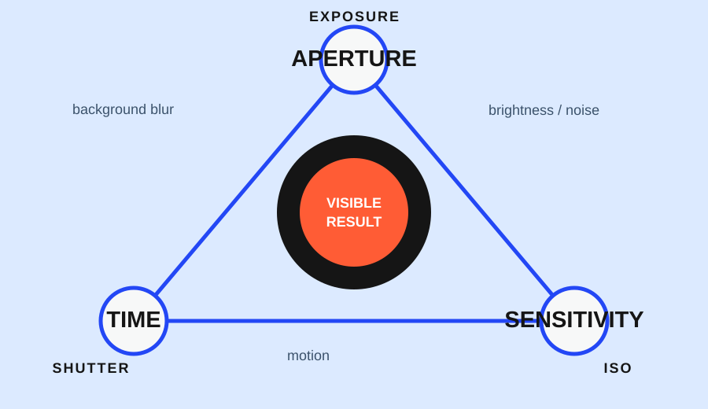

If a scene is dark or a subject is moving, raising ISO can be the practical way to keep a usable photo. If the scene is bright and still, a lower ISO may preserve cleaner-looking detail. The useful question is not “What ISO is best?” but “Which matters most here: motion, brightness, or fine detail?”
ISO is one of the three exposure controls, alongside aperture and shutter speed. A higher ISO setting lets the camera work with less recorded light for a given exposure, which can help you keep a faster shutter speed or avoid an image that is too dark. The trade-off is that higher settings can make grain or digital noise more visible, and the result varies with the camera, the exposure, and the size at which you view the image. Adobe describes ISO as part of the exposure triangle , while Nikon explains that higher ISO needs less light but can increase noise.
Start with the priority
Use this table as a first decision, not as a universal ISO chart:
| What you need to protect | ISO direction to consider | Check next |
|---|---|---|
| A moving subject stays reasonably sharp | Raise ISO if needed to keep the shutter fast enough | Motion on hands, feet, or edges |
| A dark scene remains readable handheld | Raise ISO rather than accepting a shutter speed that causes camera shake | Subject brightness and shadow detail |
| Fine texture and low noise matter most in a still scene | Keep ISO lower when the camera can stay stable | Highlight detail and the final viewing size |
This is a priority rule. It does not mean the camera should always use a high or low value. It tells you what problem ISO is solving before you touch the control.
What ISO is solving
Imagine a person reading beside a dim window. You have three broad ways to change the exposure: open the aperture, lengthen the shutter time, or raise ISO. Each protects something different. A wider aperture can reduce the depth of field. A longer shutter can make a hand-held frame or a moving person blur. Raising ISO may preserve the shutter speed, but the image may show more grain.
That is why ISO is often most useful as a rescue for motion or limited light. Adobe’s exposure guide connects higher ISO with dim conditions and warns about grain and noise . Nikon’s explanation makes the same relationship: a lower ISO needs more light, while a higher ISO needs less, with a possible increase in noise.
If the subject is completely still and the camera can be supported, a lower ISO and a longer exposure may be the calmer choice. If the subject is moving, the cleaner-looking lower ISO is not useful if the movement becomes an unintended blur.
What the higher setting costs
Higher ISO does not create one fixed “bad” result. It can make noise more visible, reduce the impression of fine texture, or make colors look less rich. How obvious that is depends on the device, the scene’s brightness, the exposure, the subject, and whether the image will be viewed as a small phone image or a large crop.
Do not turn this into a race toward the lowest number. A low ISO can be a poor choice when it forces a shutter speed that cannot hold the subject still. Conversely, a high ISO is unnecessary when a stable camera and a motionless subject already give you enough light.
The practical trade-off is therefore “acceptable detail at the intended use” rather than “minimum noise at any cost.” A small, correctly timed image may be more useful than a cleaner frame in which the important gesture is blurred.
Three practical decisions
1. Dark static object
Suppose you are photographing a mug on a table in a dim room. If the mug and camera can remain still, try the lower-ISO route first: support the camera, lengthen the shutter, and check whether the object’s edges remain clear. If the frame is still too dark or the camera cannot be stabilized, raise ISO and inspect the darker areas for the detail you actually need.
2. Moving person indoors
Now the subject walks across the same room. The priority changes. Start with a shutter speed that gives the person a reasonable chance of looking sharp. If that makes the frame too dark, raise ISO before accepting an accidental blur. The result may be noisier, but the face, hands, or body position can remain readable.
3. A clean daylight detail
For a still object in bright daylight, there may be no reason to raise ISO. Keep it lower if the scene already gives you enough shutter speed and depth of field. This is where a higher value adds a cost without solving a real problem.
Your camera may offer Auto ISO. That can be useful when the lighting changes, but it does not remove the decision: you still need to know the minimum shutter speed or acceptable noise behavior your device is using. Nikon documents Auto ISO as part of the larger aperture–shutter–ISO relationship, so exact controls should be checked in the current device manual.
Inspect the result at the size that matters
After a test frame, inspect three things:
- The important detail: Is the face, text, edge, or texture readable?
- The motion: Did the subject stay as sharp as the intention required?
- The viewing size: Does the noise matter at the size where the image will actually be shared, printed, or cropped?
A 200% crop can reveal texture that will never be visible in a small online image. The opposite is also true: a large crop can expose noise that matters for a print even when the full frame looks fine. There is no honest universal ISO ceiling without knowing the device and the output.
A filled-in ISO decision card
Use this short record for one frame:
- Scene: a person walking indoors near a window.
- Priority: keep the person’s movement readable.
- First decision: protect the shutter speed; raise ISO if the frame is too dark.
- Check: inspect the hands and face at the intended sharing size, then look at the shadow areas for distracting noise.
- Next trade-off: if the result is too noisy, ask whether a wider aperture, more available light, or a slower subject would solve more of the problem than simply lowering ISO.
The goal is not to make ISO disappear. It is to use it deliberately: accept more noise when that protects the moment, keep it lower when the scene is stable, and judge the result by the detail and motion that the photograph is supposed to preserve.
Research sources